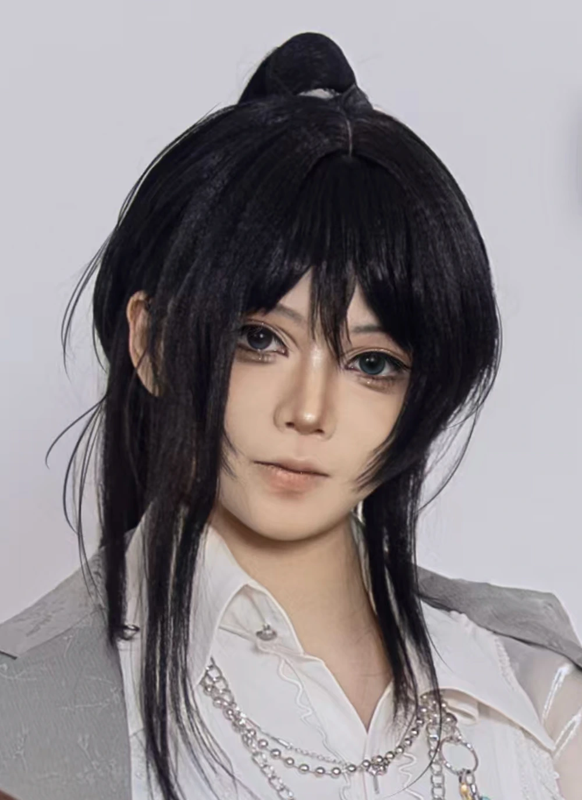

PRODUCT / PHOTOGRAPHY / VISUAL IDENTITY
A curious eye.
A hands-on mind.
Auckland, New Zealand
LOOK CLOSELY. MAKE SOMETHING.
Hi, I’m Yudi.
Product design. Photography.
Images with a little personality.

I connect objects,
images and identity.
I’m a Bachelor of Design student at the University of Auckland, building a practice around product design and photography.
I bring together hand-drawn illustration, typography, image editing and page layout. I’m interested in how one idea can move from a physical object to the photographs, graphics and digital presentation that communicate it.
My work starts with looking closely, then making and comparing. A clear structure leaves room for something playful, tactile or unexpected.
Different forms.
One way of seeing.
Objects to hold. Images to feel.
Ideas that travel between them.
A little
yes. Or no.
A familiar choice, made tangible.
A cat-shaped coin becomes a small moment of play.
An earlier product study connects a simple physical object with a digital gesture. Turn it, try your luck, and let it choose a place to start.
The work index.
Product, photography, composites and illustration.
Open a project to see the decisions behind it.
No projects in this selection.